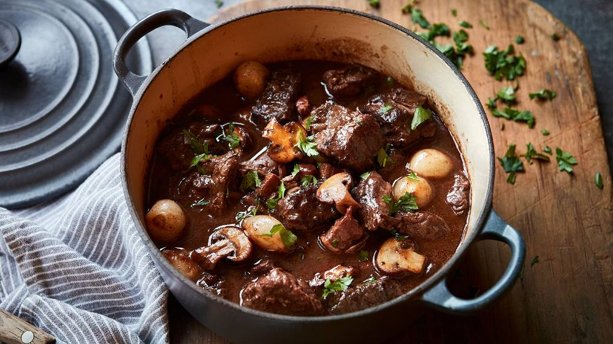

Boeuf-Bourguignon

Conseils de préparation
Etape 1 : Tailler le bœuf en cubes de 3 à 4 cm de côte. Peler les oignons sans les écorcher. Peler et couper les carottes en rondelles pas trop fines (2mm au minimum). Peler l'ail et enlever le germe.
Etape 2 : Dans une grande cocotte, faire fondre le beurre. Ajouter les oignons entiers et les lardons. Faire revenir en remuant constamment. Lorsqu'ils sont dorés, les retirer avec un écumoire, et réserver.
Etape 3 : Dans la même cocotte, faire revenir les morceaux de viande à feu vif. Ajouter les carottes, et faire revenir encore 5 mn.
Etape 4 : Lorsque la viande est bien dorée, saupoudrer de farine (60g) et laisser roussir en remuant toujours
Pour finir : Au bout de ce temps, ajouter les champignons émincés, et mettre à cuire encore une demi-heure. Retirer le bouquet garni et verser dans un plat Servir avec des pâtes (tagliatelles par exemple), ou des pommes de terre vapeur (la sauce doit être liée, mais non épaisse. Sinon, rajouter un peu d'eau).
Notre avis
Le secret est de bien faire revenir la viande à feu fort pour qu'elle soit très dorée voire presque noire. Plus le plat aura mijoté très doucement avec des phases de repos, meilleur il sera (3 jours c'est encore mieux).